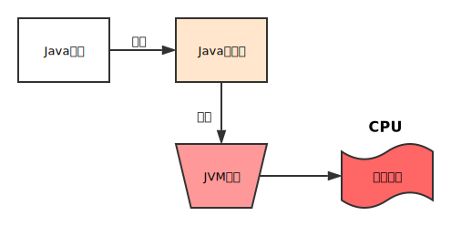

 <!DOCTYPE HTML>
<html lang="zh-CN">
<head><meta name="generator" content="Hexo 3.8.0">
  <meta charset="UTF-8">
  
    <title>第二章 Java并发机制的底层实现原理 | 一叶轻舟渡万江</title>
    <meta name="viewport" content="width=device-width, initial-scale=1,user-scalable=no">
    
    <meta name="author" content="carl-zk">
    

    
    <meta name="description" content="从下图中可以看出，Java中所使用的并发机制依赖于JVM的实现和CPU的指令。">
<meta property="og:type" content="article">
<meta property="og:title" content="第二章 Java并发机制的底层实现原理">
<meta property="og:url" content="https://github.com/carl-zk/blog/2017/03/11/第二章-Java并发机制的底层实现原理/index.html">
<meta property="og:site_name" content="一叶轻舟渡万江">
<meta property="og:description" content="从下图中可以看出，Java中所使用的并发机制依赖于JVM的实现和CPU的指令。">
<meta property="og:locale" content="zh-CN">
<meta property="og:image" content="https://github.com/carl-zk/blog/2017/03/11/第二章-Java并发机制的底层实现原理/compile.svg">
<meta property="og:updated_time" content="2019-02-16T01:58:27.861Z">
<meta name="twitter:card" content="summary">
<meta name="twitter:title" content="第二章 Java并发机制的底层实现原理">
<meta name="twitter:description" content="从下图中可以看出，Java中所使用的并发机制依赖于JVM的实现和CPU的指令。">
<meta name="twitter:image" content="https://github.com/carl-zk/blog/2017/03/11/第二章-Java并发机制的底层实现原理/compile.svg">

    
    <link rel="alternative" href="/atom.xml" title="一叶轻舟渡万江" type="application/atom+xml">
    
    
    <link rel="icon" href="/blog/img/favicon2.ico">
    
    
    <link rel="apple-touch-icon" href="/blog/img/tx2.jpg">
    <link rel="apple-touch-icon-precomposed" href="/blog/img/tx2.jpg">
    
    <link rel="stylesheet" href="/blog/css/style.css">
</head>
</html>
  <body>
    <header>
      
<div>
		
			<div id="imglogo">
				<a href="/blog/"></a>
			</div>
			
			<div id="textlogo">
				<h1 class="site-name"><a href="/blog/" title="一叶轻舟渡万江">一叶轻舟渡万江</a></h1>
				<h2 class="blog-motto">泰山不拒细壤故能成其高 江海不择细流故能就其深</h2>
			</div>
			<div class="navbar"><a class="navbutton navmobile" href="#" title="菜单">
			</a></div>
			<nav class="animated">
				<ul>
					<ul>
					 
						<li><a href="/blog/">主页</a></li>
					
						<li><a href="/blog/archives">归档</a></li>
					
						<li><a href="/blog/about">关于</a></li>
					
						<li><a href="/blog/door">门户</a></li>
					
					<li>
 					
					<form class="search" action="//google.com/search" method="get" accept-charset="utf-8">
						<label>Search</label>
						<input type="search" id="search" name="q" autocomplete="off" maxlength="20" placeholder="搜索">
						<input type="hidden" name="q" value="site:github.com/carl-zk/blog">
					</form>
					
					</li>
				</ul>
			</ul></nav>			
</div>
    </header>
    <div id="container">
      <div id="main" class="post" itemscope itemprop="blogPost">
  
	<article itemprop="articleBody"> 
		<header class="article-info clearfix">
  <h1 itemprop="name">
    
      <a href="/blog/2017/03/11/第二章-Java并发机制的底层实现原理/" title="第二章 Java并发机制的底层实现原理" itemprop="url">第二章 Java并发机制的底层实现原理</a>
  </h1>
  <p class="article-author">By
       
		<a href="/blog/about" title="carl-zk" target="_blank" itemprop="author">carl-zk</a>
		
  </p><p class="article-time">
    <time datetime="2017-03-11T13:35:52.000Z" itemprop="datePublished"> 发表于 2017-03-11</time>
    
  </p>
</header>
	<div class="article-content">
		
		<div id="toc" class="toc-article">
			<strong class="toc-title">文章目录</strong>
		
			<ol class="toc"><li class="toc-item toc-level-1"><a class="toc-link" href="#volatile的应用"><span class="toc-number">1.</span> <span class="toc-text">volatile的应用</span></a></li><li class="toc-item toc-level-1"><a class="toc-link" href="#synchronized的实现原理与应用"><span class="toc-number">2.</span> <span class="toc-text">synchronized的实现原理与应用</span></a></li><li class="toc-item toc-level-1"><a class="toc-link" href="#原子操作的实现原理"><span class="toc-number">3.</span> <span class="toc-text">原子操作的实现原理</span></a><ol class="toc-child"><li class="toc-item toc-level-2"><a class="toc-link" href="#Java如何实现原子操作"><span class="toc-number">3.1.</span> <span class="toc-text">Java如何实现原子操作</span></a></li></ol></li></ol>
		
		</div>
		
		<p>从下图中可以看出，Java中所使用的并发机制依赖于<strong>JVM的实现</strong>和<strong>CPU的指令</strong>。</p>
<a id="more"></a>
<p></p>
<h1 id="volatile的应用"><a href="#volatile的应用" class="headerlink" title="volatile的应用"></a>volatile的应用</h1><p>volatile修饰的变量进行写操作时，多核处理器会引发两件事情：</p>
<ul>
<li>将当前处理器缓存行的数据写回到系统内存。</li>
<li>这个写回内存的操作会使在其他CPU内缓存了该内存地址的数据无效。</li>
</ul>
<p>原理：volatile变量进行写操作时，汇编代码会多出一个lock指令，它会锁缓存行，并写回到内存，并使用缓存一致性机制阻止同时修改由两个以上处理器缓存的内存区域数据。处理器使用嗅探技术，将状态是共享的内存地址填充行在访问该地址内存时强制执行缓冲行填充。</p>
<h1 id="synchronized的实现原理与应用"><a href="#synchronized的实现原理与应用" class="headerlink" title="synchronized的实现原理与应用"></a>synchronized的实现原理与应用</h1><p>锁的3种类型：</p>
<ul>
<li>普通同步方法，锁是当前实例对象。synchronized function(){} </li>
<li>静态同步方法，锁是当前类的Class对象。public static synchronized void function(){}</li>
<li>同步方法块，锁是括号里配置的对象。public void function(){ synchronized(object){}}  </li>
</ul>
<h1 id="原子操作的实现原理"><a href="#原子操作的实现原理" class="headerlink" title="原子操作的实现原理"></a>原子操作的实现原理</h1><p>atomic operation是指“不可被中断的一个或一系列操作”。<br>处理器如何保证原子操作？</p>
<ul>
<li>总线锁定。</li>
<li>缓存锁定。</li>
</ul>
<h2 id="Java如何实现原子操作"><a href="#Java如何实现原子操作" class="headerlink" title="Java如何实现原子操作"></a>Java如何实现原子操作</h2><p>锁和<strong>CAS</strong>两种方式。<br><em>使用CAS实现原子操作。</em><br><figure class="highlight java"><table><tr><td class="gutter"><pre><span class="line">1</span><br><span class="line">2</span><br><span class="line">3</span><br><span class="line">4</span><br><span class="line">5</span><br><span class="line">6</span><br><span class="line">7</span><br><span class="line">8</span><br><span class="line">9</span><br><span class="line">10</span><br><span class="line">11</span><br><span class="line">12</span><br><span class="line">13</span><br><span class="line">14</span><br><span class="line">15</span><br><span class="line">16</span><br><span class="line">17</span><br><span class="line">18</span><br><span class="line">19</span><br><span class="line">20</span><br><span class="line">21</span><br><span class="line">22</span><br><span class="line">23</span><br><span class="line">24</span><br><span class="line">25</span><br><span class="line">26</span><br><span class="line">27</span><br><span class="line">28</span><br><span class="line">29</span><br><span class="line">30</span><br><span class="line">31</span><br><span class="line">32</span><br><span class="line">33</span><br><span class="line">34</span><br><span class="line">35</span><br><span class="line">36</span><br><span class="line">37</span><br><span class="line">38</span><br><span class="line">39</span><br><span class="line">40</span><br><span class="line">41</span><br><span class="line">42</span><br><span class="line">43</span><br><span class="line">44</span><br><span class="line">45</span><br><span class="line">46</span><br><span class="line">47</span><br><span class="line">48</span><br><span class="line">49</span><br><span class="line">50</span><br><span class="line">51</span><br><span class="line">52</span><br><span class="line">53</span><br><span class="line">54</span><br><span class="line">55</span><br><span class="line">56</span><br><span class="line">57</span><br><span class="line">58</span><br><span class="line">59</span><br><span class="line">60</span><br><span class="line">61</span><br><span class="line">62</span><br><span class="line">63</span><br><span class="line">64</span><br></pre></td><td class="code"><pre><span class="line"><span class="keyword">package</span> chapter01;</span><br><span class="line"></span><br><span class="line"><span class="keyword">import</span> java.util.ArrayList;</span><br><span class="line"><span class="keyword">import</span> java.util.concurrent.atomic.AtomicInteger;</span><br><span class="line"></span><br><span class="line"><span class="comment">/**</span></span><br><span class="line"><span class="comment"> * Created by hero on 17-3-11.</span></span><br><span class="line"><span class="comment"> */</span></span><br><span class="line"><span class="keyword">public</span> <span class="class"><span class="keyword">class</span> <span class="title">CASIncrease</span> </span>&#123;</span><br><span class="line">    <span class="keyword">private</span> <span class="keyword">static</span> <span class="keyword">final</span> <span class="keyword">int</span> _COUNT = <span class="number">1000</span>;</span><br><span class="line">    <span class="keyword">private</span> AtomicInteger atomicV = <span class="keyword">new</span> AtomicInteger(<span class="number">0</span>);</span><br><span class="line">    <span class="keyword">private</span> <span class="keyword">int</span> v = <span class="number">0</span>;</span><br><span class="line"></span><br><span class="line">    <span class="function"><span class="keyword">public</span> <span class="keyword">static</span> <span class="keyword">void</span> <span class="title">main</span><span class="params">(String[] args)</span> </span>&#123;</span><br><span class="line">        <span class="keyword">new</span> CASIncrease().contrast();</span><br><span class="line">    &#125;</span><br><span class="line"></span><br><span class="line">    <span class="comment">/**</span></span><br><span class="line"><span class="comment">     * 在并发情况下，对比CAS加法和普通加法</span></span><br><span class="line"><span class="comment">     */</span></span><br><span class="line">    <span class="function"><span class="keyword">public</span> <span class="keyword">void</span> <span class="title">contrast</span><span class="params">()</span> </span>&#123;</span><br><span class="line">        ArrayList&lt;Thread&gt; list = <span class="keyword">new</span> ArrayList&lt;Thread&gt;(_COUNT);</span><br><span class="line">        <span class="keyword">for</span> (<span class="keyword">int</span> i = <span class="number">0</span>; i &lt; _COUNT; i++) &#123;</span><br><span class="line">            Thread t = <span class="keyword">new</span> Thread(<span class="keyword">new</span> Runnable() &#123;</span><br><span class="line">                <span class="function"><span class="keyword">public</span> <span class="keyword">void</span> <span class="title">run</span><span class="params">()</span> </span>&#123;</span><br><span class="line">                    commonAdd();</span><br><span class="line">                    casAdd();</span><br><span class="line">                &#125;</span><br><span class="line">            &#125;);</span><br><span class="line">            list.add(t);</span><br><span class="line">        &#125;</span><br><span class="line"></span><br><span class="line">        <span class="keyword">for</span> (Thread item : list) &#123;</span><br><span class="line">            item.start();</span><br><span class="line">        &#125;</span><br><span class="line"></span><br><span class="line">        <span class="keyword">for</span> (Thread thread : list) &#123;</span><br><span class="line">            <span class="keyword">try</span> &#123;</span><br><span class="line">                thread.join();</span><br><span class="line">            &#125; <span class="keyword">catch</span> (InterruptedException e) &#123;</span><br><span class="line">                e.printStackTrace();</span><br><span class="line">            &#125;</span><br><span class="line">        &#125;</span><br><span class="line"></span><br><span class="line">        System.out.println(<span class="string">"CAS add "</span> + atomicV.get());</span><br><span class="line">        System.out.println(<span class="string">"normal add "</span> + v);</span><br><span class="line">    &#125;</span><br><span class="line"></span><br><span class="line">    <span class="function"><span class="keyword">private</span> <span class="keyword">void</span> <span class="title">casAdd</span><span class="params">()</span> </span>&#123;</span><br><span class="line">        <span class="keyword">for</span> (; ; ) &#123;</span><br><span class="line">            <span class="keyword">int</span> real = atomicV.get();  <span class="comment">//操作1</span></span><br><span class="line">            <span class="comment">/**</span></span><br><span class="line"><span class="comment">             * 在这里如果有另外一个线程把atomicV值改了，然后又改了回来，就发生了ABA问题</span></span><br><span class="line"><span class="comment">             */</span></span><br><span class="line">            <span class="keyword">boolean</span> succeed = atomicV.compareAndSet(real, real + <span class="number">1</span>);  <span class="comment">//操作2</span></span><br><span class="line">            <span class="keyword">if</span> (succeed) <span class="keyword">break</span>;</span><br><span class="line">        &#125;</span><br><span class="line">    &#125;</span><br><span class="line"></span><br><span class="line">    <span class="function"><span class="keyword">private</span> <span class="keyword">void</span> <span class="title">commonAdd</span><span class="params">()</span> </span>&#123;</span><br><span class="line">        <span class="keyword">int</span> real = v;</span><br><span class="line">        v = real + <span class="number">1</span>;</span><br><span class="line">    &#125;</span><br><span class="line">&#125;</span><br></pre></td></tr></table></figure></p>
<p>CAS实现原子操作的3大问题：</p>
<ul>
<li>ABA问题。</li>
<li>循环时间长开销大。</li>
<li>只能保证一个共享变量的原子操作。</li>
</ul>
  
	</div>
		<footer class="article-footer clearfix">
<div class="article-catetags">

<div class="article-categories">
  <span></span>
  <a class="article-category-link" href="/blog/categories/并发编程的艺术/">并发编程的艺术</a>
</div>


</div>


	<div class="article-share" id="share">
	
	  <div data-url="https://github.com/carl-zk/blog/2017/03/11/第二章-Java并发机制的底层实现原理/" data-title="第二章 Java并发机制的底层实现原理 | 一叶轻舟渡万江" data-tsina class="share clearfix">
	  </div>
	
	</div>


</footer>

   	       
	</article>
	
<nav class="article-nav clearfix">
 
 <div class="prev">
 <a href="/blog/2017/03/11/第三章-Java内存模型/" title="第三章 Java内存模型">
  <strong>上一篇：</strong><br>
  <span>
  第三章 Java内存模型</span>
</a>
</div>


<div class="next">
<a href="/blog/2017/03/09/第一章-并发编程的挑战/" title="第一章 并发编程的挑战">
 <strong>下一篇：</strong><br> 
 <span>第一章 并发编程的挑战
</span>
</a>
</div>

</nav>


<!-- LiveRe City install code -->
<div id="lv-container" data-id="city" data-uid="MTAyMC8zMTU5NS84MTU5">
<script type="text/javascript">
   (function(d, s) {
       var j, e = d.getElementsByTagName(s)[0];

       if (typeof LivereTower === 'function') { return; }

       j = d.createElement(s);
       j.src = 'https://cdn-city.livere.com/js/embed.dist.js';
       j.async = true;

       e.parentNode.insertBefore(j, e);
   })(document, 'script');
</script>
<noscript>Please activate JavaScript for write a comment in LiveRe</noscript>
</div>
<!-- completed City install code -->
	

</div>  
      <div class="openaside"><a class="navbutton" href="#" title="显示侧边栏"></a></div>

  <div id="toc" class="toc-aside">
  <strong class="toc-title">文章目录</strong>
 
 <ol class="toc"><li class="toc-item toc-level-1"><a class="toc-link" href="#volatile的应用"><span class="toc-number">1.</span> <span class="toc-text">volatile的应用</span></a></li><li class="toc-item toc-level-1"><a class="toc-link" href="#synchronized的实现原理与应用"><span class="toc-number">2.</span> <span class="toc-text">synchronized的实现原理与应用</span></a></li><li class="toc-item toc-level-1"><a class="toc-link" href="#原子操作的实现原理"><span class="toc-number">3.</span> <span class="toc-text">原子操作的实现原理</span></a><ol class="toc-child"><li class="toc-item toc-level-2"><a class="toc-link" href="#Java如何实现原子操作"><span class="toc-number">3.1.</span> <span class="toc-text">Java如何实现原子操作</span></a></li></ol></li></ol>
 
  </div>

<div id="asidepart">
<div class="closeaside"><a class="closebutton" href="#" title="隐藏侧边栏"></a></div>
<aside class="clearfix">

  


  
<div class="categorieslist">
	<p class="asidetitle">分类</p>
		<ul>
		
		  
			<li><a href="/blog/categories/OFBiz/" title="OFBiz">OFBiz<sup>3</sup></a></li>
		  
		
		  
			<li><a href="/blog/categories/hdu/" title="hdu">hdu<sup>35</sup></a></li>
		  
		
		  
			<li><a href="/blog/categories/java/" title="java">java<sup>15</sup></a></li>
		  
		
		  
			<li><a href="/blog/categories/并发编程的艺术/" title="并发编程的艺术">并发编程的艺术<sup>7</sup></a></li>
		  
		
		  
			<li><a href="/blog/categories/数据结构/" title="数据结构">数据结构<sup>15</sup></a></li>
		  
		
		  
			<li><a href="/blog/categories/系统配置/" title="系统配置">系统配置<sup>11</sup></a></li>
		  
		
		  
			<li><a href="/blog/categories/设计模式/" title="设计模式">设计模式<sup>24</sup></a></li>
		  
		
		</ul>
</div>


  
<div class="tagslist">
	<p class="asidetitle">标签</p>
		<ul class="clearfix">
		
			
				<li><a href="/blog/tags/递归/" title="递归">递归<sup>6</sup></a></li>
			
		
			
				<li><a href="/blog/tags/oracle/" title="oracle">oracle<sup>6</sup></a></li>
			
		
			
				<li><a href="/blog/tags/javascript/" title="javascript">javascript<sup>6</sup></a></li>
			
		
			
				<li><a href="/blog/tags/reflect/" title="reflect">reflect<sup>4</sup></a></li>
			
		
			
				<li><a href="/blog/tags/MySQL/" title="MySQL">MySQL<sup>4</sup></a></li>
			
		
			
				<li><a href="/blog/tags/Servlet/" title="Servlet">Servlet<sup>3</sup></a></li>
			
		
			
				<li><a href="/blog/tags/spring/" title="spring">spring<sup>3</sup></a></li>
			
		
			
				<li><a href="/blog/tags/LeetCode/" title="LeetCode">LeetCode<sup>3</sup></a></li>
			
		
			
				<li><a href="/blog/tags/python/" title="python">python<sup>2</sup></a></li>
			
		
			
				<li><a href="/blog/tags/weblogic/" title="weblogic">weblogic<sup>2</sup></a></li>
			
		
			
				<li><a href="/blog/tags/sql/" title="sql">sql<sup>2</sup></a></li>
			
		
			
				<li><a href="/blog/tags/docker/" title="docker">docker<sup>2</sup></a></li>
			
		
			
				<li><a href="/blog/tags/oauth2/" title="oauth2">oauth2<sup>1</sup></a></li>
			
		
			
				<li><a href="/blog/tags/shell/" title="shell">shell<sup>1</sup></a></li>
			
		
			
				<li><a href="/blog/tags/elasticsearch/" title="elasticsearch">elasticsearch<sup>1</sup></a></li>
			
		
			
				<li><a href="/blog/tags/hibernate/" title="hibernate">hibernate<sup>1</sup></a></li>
			
		
			
				<li><a href="/blog/tags/maven/" title="maven">maven<sup>1</sup></a></li>
			
		
			
				<li><a href="/blog/tags/log4j2/" title="log4j2">log4j2<sup>1</sup></a></li>
			
		
			
				<li><a href="/blog/tags/nginx/" title="nginx">nginx<sup>1</sup></a></li>
			
		
			
				<li><a href="/blog/tags/redis/" title="redis">redis<sup>1</sup></a></li>
			
		
		</ul>
</div>


  <div class="linkslist">
  <p class="asidetitle">友情链接</p>
    <ul>
        
          <li>
            
            	<a href="http://www.ruanyifeng.com/blog/archives.html" target="_blank" title="阮一峰">阮一峰</a>
            
          </li>
        
          <li>
            
            	<a href="https://blog.csdn.net/wo541075754" target="_blank" title="丑胖侠">丑胖侠</a>
            
          </li>
        
          <li>
            
            	<a href="http://it.deepinmind.com/index.html" target="_blank" title="deepinmind">deepinmind</a>
            
          </li>
        
          <li>
            
            	<a href="https://www.cnblogs.com/xrq730/" target="_blank" title="五月的仓颉">五月的仓颉</a>
            
          </li>
        
          <li>
            
            	<a href="http://ifeve.com/category/java/" target="_blank" title="并发编程网">并发编程网</a>
            
          </li>
        
          <li>
            
            	<a href="https://github.com/carl-zk" target="_blank" title="git主页">git主页</a>
            
          </li>
        
    </ul>
</div>

</aside>
</div>
    </div>
    <footer><div id="footer">
	
	<div class="line">
		<span></span>
		<div class="author"></div>
	</div>
	
	
	<section class="info">
		<p>  <br>
			STAY FOOLISH, STAY HUNGRY.</p>
	</section>
	 
	<div class="social-font">

	</div>
			
		

		<p class="copyright">
		All Rights Reserved © 2019 
		
		<a href="/blog/about" target="_blank" title="carl-zk">carl-zk</a>
		
		
		</p>
</div>

<script type="text/javascript" color="255,255,0" opacity="0.9" zindex="-3" count="80" src="https://cdnjs.cloudflare.com/ajax/libs/canvas-nest.js/1.0.1/canvas-nest.min.js"></script>
<script type="text/javascript" color="44,166,203" opacity="0.9" zindex="-1" count="80" src="https://cdnjs.cloudflare.com/ajax/libs/canvas-nest.js/1.0.1/canvas-nest.min.js"></script>
<script type="text/javascript" color="255,0,0" opacity="0.9" zindex="-2" count="80" src="https://cdnjs.cloudflare.com/ajax/libs/canvas-nest.js/1.0.1/canvas-nest.min.js"></script></footer>
    <script src="/blog/js/jquery-2.0.3.min.js"></script>
<script src="/blog/js/jquery.imagesloaded.min.js"></script>
<script src="/blog/js/gallery.js"></script>
<script src="/blog/js/jquery.qrcode-0.12.0.min.js"></script>

<script type="text/javascript">
$(document).ready(function(){ 
  $('.navbar').click(function(){
    $('header nav').toggleClass('shownav');
  });
  var myWidth = 0;
  function getSize(){
    if( typeof( window.innerWidth ) == 'number' ) {
      myWidth = window.innerWidth;
    } else if( document.documentElement && document.documentElement.clientWidth) {
      myWidth = document.documentElement.clientWidth;
    };
  };
  var m = $('#main'),
      a = $('#asidepart'),
      c = $('.closeaside'),
      o = $('.openaside');
  c.click(function(){
    a.addClass('fadeOut').css('display', 'none');
    o.css('display', 'block').addClass('fadeIn');
    m.addClass('moveMain');
  });
  o.click(function(){
    o.css('display', 'none').removeClass('beforeFadeIn');
    a.css('display', 'block').removeClass('fadeOut').addClass('fadeIn');      
    m.removeClass('moveMain');
  });
  $(window).scroll(function(){
    o.css("top",Math.max(80,260-$(this).scrollTop()));
  });
  
  $(window).resize(function(){
    getSize(); 
    if (myWidth >= 1024) {
      $('header nav').removeClass('shownav');
    }else{
      m.removeClass('moveMain');
      a.css('display', 'block').removeClass('fadeOut');
      o.css('display', 'none');
      
      $('#toc.toc-aside').css('display', 'none');
        
    }
  });
});
</script>

<script type="text/javascript">
$(document).ready(function(){ 
  var ai = $('.article-content>iframe'),
      ae = $('.article-content>embed'),
      t  = $('#toc'),
      ta = $('#toc.toc-aside'),
      o  = $('.openaside'),
      c  = $('.closeaside');
  if(ai.length>0){
    ai.wrap('<div class="video-container" />');
  };
  if(ae.length>0){
   ae.wrap('<div class="video-container" />');
  };
  c.click(function(){
    ta.css('display', 'block').addClass('fadeIn');
  });
  o.click(function(){
    ta.css('display', 'none');
  });
  $(window).scroll(function(){
    ta.css("top",Math.max(140,320-$(this).scrollTop()));
  });
});
</script>


<script type="text/javascript">
$(document).ready(function(){ 
  var $this = $('.share'),
      url = $this.attr('data-url'),
      encodedUrl = encodeURIComponent(url),
      title = $this.attr('data-title'),
      tsina = $this.attr('data-tsina'),
      description = $this.attr('description');
  var html = [
  '<div class="hoverqrcode clearfix"></div>',
  '<a class="overlay" id="qrcode"></a>',
  '<a href="https://www.facebook.com/sharer.php?u=' + encodedUrl + '" class="article-share-facebook" target="_blank" title="Facebook"></a>',
  '<a href="https://twitter.com/intent/tweet?url=' + encodedUrl + '" class="article-share-twitter" target="_blank" title="Twitter"></a>',
  '<a href="#qrcode" class="article-share-qrcode" title="微信"></a>',
  '<a href="http://widget.renren.com/dialog/share?resourceUrl=' + encodedUrl + '&srcUrl=' + encodedUrl + '&title=' + title +'" class="article-share-renren" target="_blank" title="人人"></a>',
  '<a href="http://service.weibo.com/share/share.php?title='+title+'&url='+encodedUrl +'&ralateUid='+ tsina +'&searchPic=true&style=number' +'" class="article-share-weibo" target="_blank" title="微博"></a>',
  '<span title="Share to"></span>'
  ].join('');
  $this.append(html);

  $('.hoverqrcode').hide();

  var myWidth = 0;
  function updatehoverqrcode(){
    if( typeof( window.innerWidth ) == 'number' ) {
      myWidth = window.innerWidth;
    } else if( document.documentElement && document.documentElement.clientWidth) {
      myWidth = document.documentElement.clientWidth;
    };
    var qrsize = myWidth > 1024 ? 200:100;
    var options = {render: 'image', size: qrsize, fill: '#2ca6cb', text: url, radius: 0.5, quiet: 1};
    var p = $('.article-share-qrcode').position();
    $('.hoverqrcode').empty().css('width', qrsize).css('height', qrsize)
                          .css('left', p.left-qrsize/2+20).css('top', p.top-qrsize-10)
                          .qrcode(options);
  };
  $(window).resize(function(){
    $('.hoverqrcode').hide();
  });
  $('.article-share-qrcode').click(function(){
    updatehoverqrcode();
    $('.hoverqrcode').toggle();
  });
  $('.article-share-qrcode').hover(function(){}, function(){
      $('.hoverqrcode').hide();
  });
});   
</script>


<link rel="stylesheet" href="/blog/fancybox/jquery.fancybox.css" media="screen" type="text/css">
<script src="/blog/fancybox/jquery.fancybox.pack.js"></script>
<script type="text/javascript">
$(document).ready(function(){ 
  $('.article-content').each(function(i){
    $(this).find('img').each(function(){
      if ($(this).parent().hasClass('fancybox')) return;
      var alt = this.alt;
      if (alt) $(this).after('<span class="caption">' + alt + '</span>');
      $(this).wrap('<a href="' + this.src + '" title="' + alt + '" class="fancybox"></a>');
    });
    $(this).find('.fancybox').each(function(){
      $(this).attr('rel', 'article' + i);
    });
  });
  if($.fancybox){
    $('.fancybox').fancybox();
  }
}); 
</script>


  <script src="/blog/js/mermaid.min.js"></script>
  <script>
    if (window.mermaid) {
      mermaid.initialize({theme: 'forest'});
    }
  </script>


<!-- Analytics Begin -->


<!-- Analytics End -->

<!-- Totop Begin -->

	<div id="totop">
	<a title="返回顶部"></a>
	</div>
	<script src="/blog/js/totop.js"></script>

<!-- Totop End -->

<!-- MathJax Begin -->
<!-- mathjax config similar to math.stackexchange -->


<!-- MathJax End -->

<!-- Tiny_search Begin -->

<!-- Tiny_search End -->

  </body>
</html>

